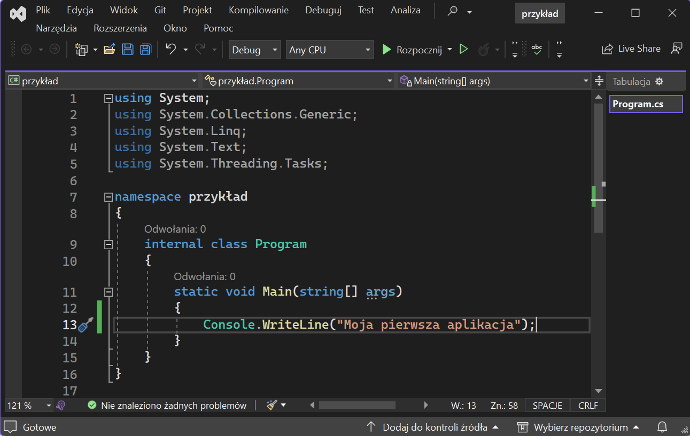

Język C# został opracowany w firmie Microsoft.Język ten pochodzi z rodziny C i C++, choć zawiera również wiele elementów znanych programistom np. Javy. Głównym twórcą C# jest Anders Hejlsberg. C# jest językiem obiektowym i jest ściśle powiązany ze środowiskiem uruchomieniowym .NET, co oczywiście nie jest równoznaczne z tym, że nie powstają jego implementacje przeznaczone dla innych platform. Oznacza to, że dobrze sprawdza się w najnowszym środowisku Windows oraz w sposób bezpośredni może korzystać z klas .NET, co pozwala na szybkie i efektywne pisanie aplikacji.
Struktura prostego programu w języku C#:
Typy danych w C#
- Typy proste
- Typy całkowite
- Typy zmiennoprzecinkowe
- Typ char
- Typ bool
- Typy wyliczeniowe
- Typy strukturalne – ciągi znaków
- Typy referencyjne
| Typy całkowite | ||
|---|---|---|
| Nazwa | Zakres | Rozmiar |
| sbyte | od -128 do 127 | 8 bitów |
| byte | od 0 do 255 | 8 bitów |
| short | od -215 do 215-1 | 16 bitów |
| ushort | od 0 do 216-1 | 16 bitów |
| int | od -231 do 232-1 | 32 bity |
| uint | od 0 do 231-1 | 32 bity |
| long | od -263 do 263-1 | 64 bity |
| ulong | od 0 do 264-1 | 64 bity |
| Typy zmiennoprzecinkowe | ||
|---|---|---|
| Nazwa | Zakres | Precyzja |
| float | od ±1.5 * 10-45 do ±3.4 * 1038 | 7 miejsc po przecinku |
| double | od ±5.0 * 10-324 do ±1.7 * 10308 | 15 lub 16 cyfr |
| decimal | od ±1.0 * 10-28 do ±7.9 * 1028 | 28 lub 29 cyfr |
Typ wyliczeniowy jest określany słowem enum i pozwala na tworzenie wyliczeń, czyli określonego zbioru wartości,
które będą przyjmowane przez dane tego typu.
enum nazwa_wyliczenia {element1, element2, …, elementN};
Przykład: enum Kolory {czerwony, zielony, niebieski};